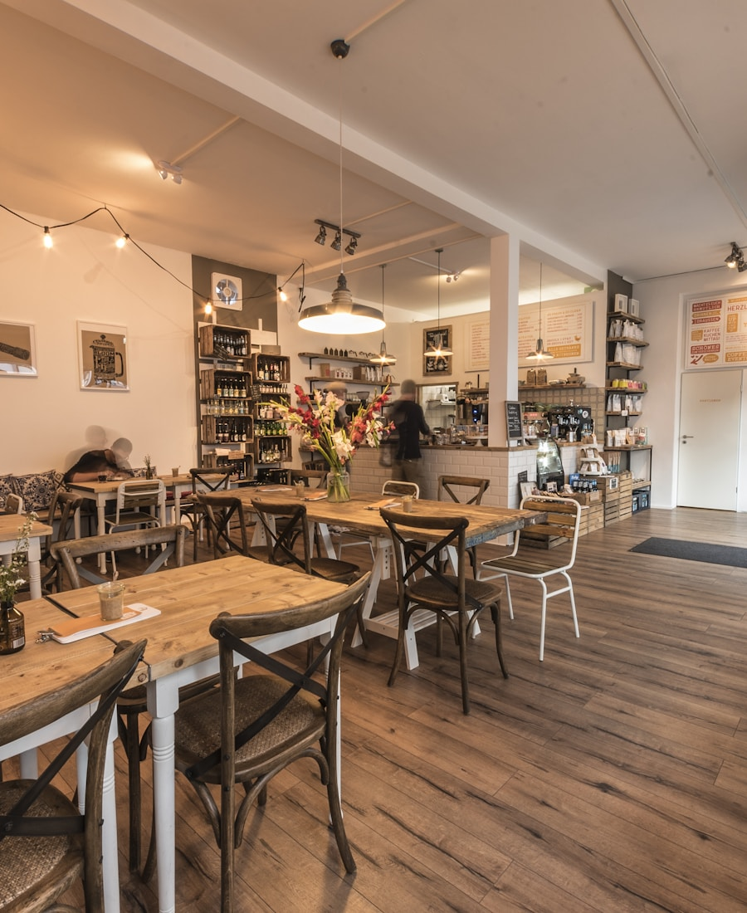
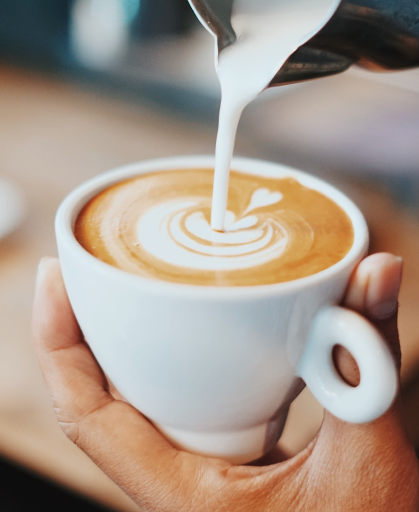
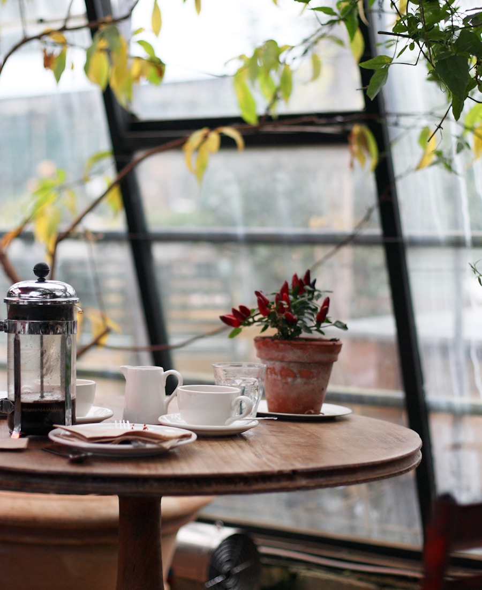

Café Elmorie
About
A place where
you belong.
ここにいていいよ、と言える場所
Café Elmorieは、2019年の春に下北沢の住宅街で産声を上げました。
オーナーの藤川は、もともとIT企業に勤めていましたが、毎朝立ち寄っていた近所のカフェが閉店してしまったとき、「なくなってはじめて、どれほど大切な場所だったかがわかった」と気づきます。
一杯のコーヒーと、ゆっくりできる空間が、誰かの日常をほんの少し豊かにする。そんな確信をもって、2年間のコーヒー修業と物件探しを経て、念願のカフェをオープンしました。

From bean
to cup.
豆の声を聞きながら
Café Elmorieのコーヒーは、すべて店内の小型焙煎機で少量ずつ丁寧に焙煎しています。
使用する生豆は、倫理的な農業を実践している農園から、認証を受けたインポーターを通じて仕入れています。エチオピア、グアテマラ、ブラジルなど、世界各地の農園の個性ある豆を、それぞれに合った焙煎度に仕上げています。
焙煎したての新鮮な豆を、挽きたてで一杯ずつていねいに抽出する。その積み重ねがCafé Elmorieのコーヒーです。

Your corner
of calm.
一人でも、ゆっくり過ごせる
Café Elmorieは、おひとりさまも気兼ねなく入れることを大切にしています。
窓際にはひとり掛けの席を設け、カウンターからは焙煎の様子も眺められます。本を読んでもよし、ぼんやりしてもよし。時間を気にせず、あなたのペースでお過ごしください。
Wi-Fiと電源は完備しています。ただ、少しだけ画面から目を離して、コーヒーの香りを楽しんでもらえたら、それがいちばんうれしいです。

Our Commitment
Fresh Roasting
毎日の自家焙煎
少量ずつ毎日焙煎することで、常に焙煎したての新鮮なコーヒーをご提供します。
Slow Space
ゆっくりできる空間
時間を気にせずゆっくり過ごせる、プレッシャーのない居心地のよい空間を大切にしています。
Solo Welcome
おひとりさま大歓迎
おひとりでも気兼ねなく入れるよう、カウンター席や窓際の一人席を充実させています。